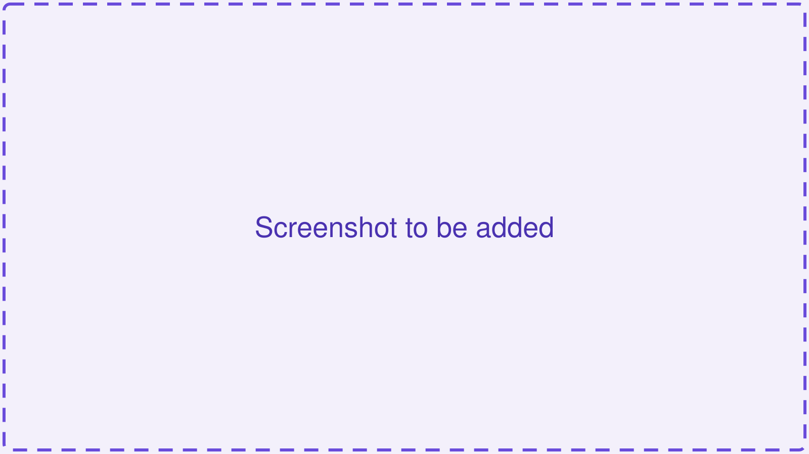

01 / Environment
Apple Interaction
A woodland meadow where players freely throw and catch apples with an NPC squirrel whose mood-driven finite state machine controls its behaviour, such as offering, chasing and evading, and its expressions.

Start with the interaction
Apple Interaction is a virtual reality meadow with a large tree at its centre and a squirrel to play with. It was designed to bring out PLAY, so there is no score, no timer, and no instruction on what to do. Participants simply spend about seven and a half minutes in the meadow.
The main activity is throwing apples. They lie on the ground and hang from the tree, and you can pick them up and throw them to the squirrel. It tracks where you are and where the apples land, and responds accordingly. It chases and catches apples, offers one to you, dodges when you throw at it, runs off with one so that you have to chase it, or climbs the tree and drops one from above. Either of you can start a round, so the exchange moves back and forth.
The aim was for a pleasant space and a responsive squirrel to make playing feel natural, without any rules. The meadow is open, sunny, and green, the squirrel is cute and expressive, and nothing asks you to win.
What happens in this world
The squirrel
The squirrel is a navigation-mesh agent driven by a finite state machine, which means it is always in one clear behaviour, such as idling, offering an apple, chasing, or climbing, and moves between them as things happen. A simple mood model tracks how playful and how tired it is. These two values change how fast it moves and which behaviours it favours as the session goes on, so it is livelier at some moments and slower at others. This mood system is the only adaptive logic in the environment. There is no difficulty setting or scoring.
Its sensors track your distance, whether you are standing still, and the path and force of the apples you throw. It reacts to being thrown at by catching, dodging, being startled, tripping playfully, or taunting you, and its catch style changes with the height and side an apple comes from. Its hand-drawn faces swap with its mood, gaze, and blinking, and its voice shifts in pitch and volume to match.
The meadow and what you can do
The scene is a circular woodland meadow centred on one large tree. Loose apples lie on the ground, up to five at a time, and reappear at fixed spots when the supply runs low. More grow on the tree and become throwable once you grab them. Apples have a custom shader with a star-shaped sparkle and come in a few colours, and the grass has a custom shader too. You move with short comfort hops in the direction you are looking, and you grab and throw with the trigger.
Why it was designed this way
I made the other player an animal on purpose. Research on virtual companions suggests that a stylised, non-human character supports social presence and positive feelings better than a realistic human avatar, and studies of virtual pets found that animals that respond to you, and bring you things, keep people engaged. A squirrel can also be silly and unpredictable without seeming out of place. I wanted it to be cute so that people would feel friendly towards it straight away and be comfortable joining in. Hand-drawn expressions that change with its mood make it more believable as someone to play with, and soft, rounded textures tend to come across as warm and welcoming.
The rest of the setting follows the same thinking. Natural, open, daylit scenes have been linked to more positive feelings, bright colours are associated with joy, and the music is cheerful and moderately fast, since faster tempos tend to sound happier. Movement uses short hops to lower the risk of motion sickness, and there is no goal because play is something people do for its own sake.
Gallery

What this experiment showed
2 of 7 parts met
- Valence (partly met)
- Arousal (partly met)
- Dominance (not met)
- Reciprocity (met)
- Sociality (not met)
- Joy (partly met)
- PLAY (met)
Filled: met. Half: partly met. Empty: not met.
Twenty-five participants rated how they felt at three points: before any VR, after a short neutral scene, and after the meadow. Each part of PLAY was tested against a threshold or against how participants felt before VR.
Met. PLAY was the highest-rated emotion on the PLAY questionnaire, ahead of its closest competitor, SEEKING (19.88 against 18.80, p = .017), and it rose reliably across the three points (p < .001). Reciprocity was met too: participants started 62% of exchanges on average, and the more exchanges a person started, the higher they rated PLAY (Spearman rho = .52, p = .008). That result held when any one participant, or the four most unusual ones, were removed. Interaction also did not drop off over the session (p = .449).
Partly met. Valence was well above the threshold for "high" (median 8, p < .001) and rose from 7.16 before VR to 8.08 after the meadow. Arousal rose from 4.42 to 6.18, but did not reach the "high" threshold (median 7, p = .363). Joy, measured as joviality, rose from 3.33 to 4.02, but was not clearly ahead of surprise (4.02 against 3.72, p = .079).
Not met. Dominance, the feeling of being in control, was above the threshold (median 7, p = .023), but did not change reliably across the three points (p = .101). Sociality was also not met. Participants felt the squirrel was there with them (co-presence 3.64, above its midpoint of 3, p < .001), but did not rate it as clearly attentive to them (social presence 3.87, against a midpoint of 4, p = .691).
The pattern matters as much as the tally. Most of the rise in positive feeling had already happened by the time participants had been in VR for a few minutes. The only measure that rose further in the meadow than in the neutral scene was surprise (p = .021). So the environment was pleasant, engaging, and produced a clear PLAY signal, but I cannot say that all of it came from the design itself. The most useful finding is about initiative: who started the exchange mattered more than how many exchanges there were. With only 25 participants, short of the 30 I planned for, these results are partial evidence, not proof.

Keep exploring the project
| Document | Format |
|---|---|
| Final paper: Using Virtual Reality to Elicit the PLAY Emotion: Design and Evaluation of an Apple Interaction Environment | |
| Literature review: The Elicitation of PLAY in Virtual Reality |
Source code
Link to the compressed source archive for this environment: file to be added.
Each archive holds the C# scripts, the Unity project settings and the package manifest, which is enough to read the code and see which Unity version and packages it was built with. Models, textures, audio and other third-party assets are left out to keep the archive small.